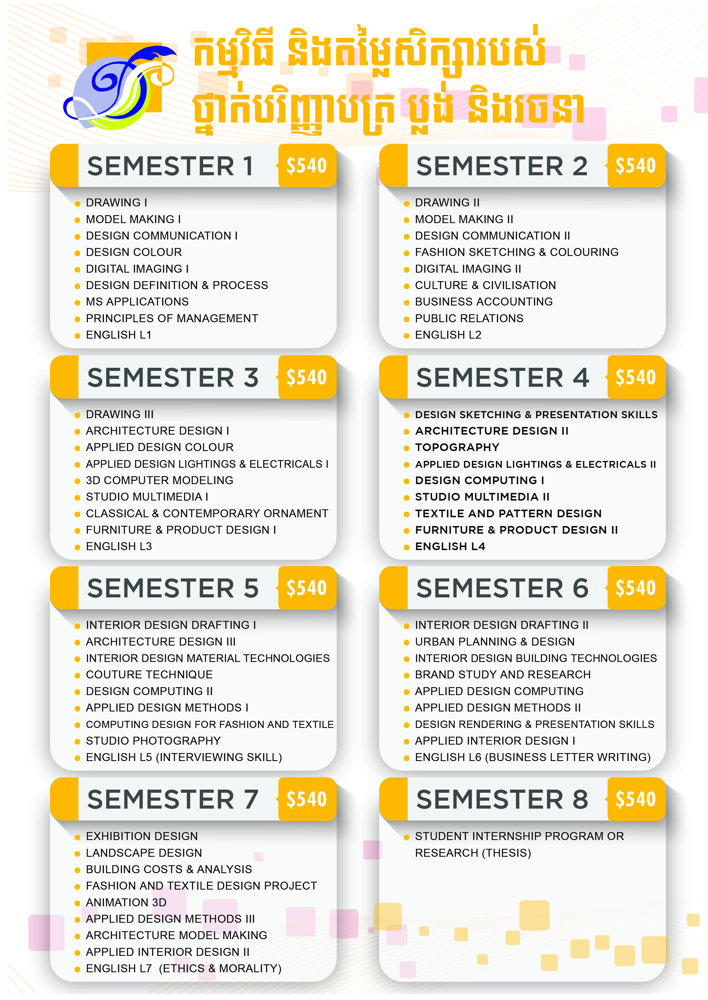
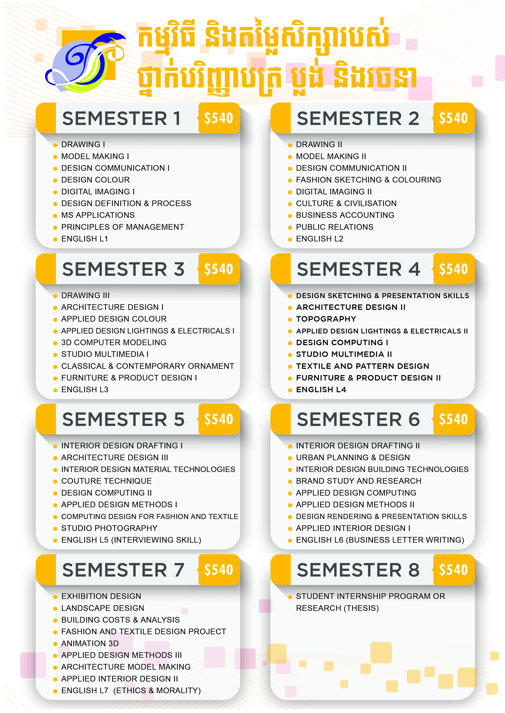

វិទ្យាស្ថានស៊ីតិក |
ទំនាក់ទំនង |
កម្មវិធីសិក្សា |
កម្មសិក្សា |
សម្ភារបរិក្ខា |
អំពីវិទ្យាស្ថាន |
រចនាសម្ព័ន្ធ |
សិស្ស |
មុខវិជ្ចា


ជំនាញ ប្លង់ និងរចនា
អ្វីទៅជា ប្លង់ និងរចនា?
ប្លង់ និងរចនា គឺជាគម្រោងរៀបចំដោយគំនិតច្នៃប្រឌិត និងការបង្កើតថ្មី! អ្នកចេញ គម្រោង និងអ្នកធ្វើការរចនារៀបចំជាអ្នកនាំមកនូវៈ
- សោភ័ណភាព ភាពសក្តិសម និងចុះសម្រុង
- ភាពលេចធ្លោ ទំនើប និងទាន់សម័យ
- តម្លៃ មោទនភាព និងជំនឿជឿជាក់
- របត់នៃរចនាបថ និងសម័យកាល
- ការទស្សន៍ទាយទុកជាមុននូវអនាគតនៃការពេញនិយម
- សេចក្តីសុខ និងភាពសុខដុម
អ្នកចេញគម្រោង និងអ្នករៀបចំក្លាយជាធនធានមនុស្សកាន់តែសំខាន់សម្រាប់ប្រទេសដែលអភិវឌ្ឍន៍ និងកំពុងអភិវឌ្ឍន៍
 

ជំនាញផ្សេងៗទៀត